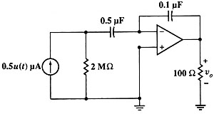

Problem #3
Assuming that the OpAmp in the following circuit is ideal, find vo(t). (Hayt-Kemmerly)

I used the following circuit description:
"j5,0,1,5E-007,0; r2,0,1,2000000.,0; cx,1,2,5E-007,0; cy,2,3,1E-007,0; r1,3,0,100,0; o1,0,2,3,0" ->cir
Simulate the circuit. I used frequency domain analysis, to save time. Transient analysis may take too long.
sq\fd(cir
)Done
Take v3 from frequency domain to time domain.
Define v3=dif\ilaplace(v3,s)
Done
v3
5*exp(-t)-5